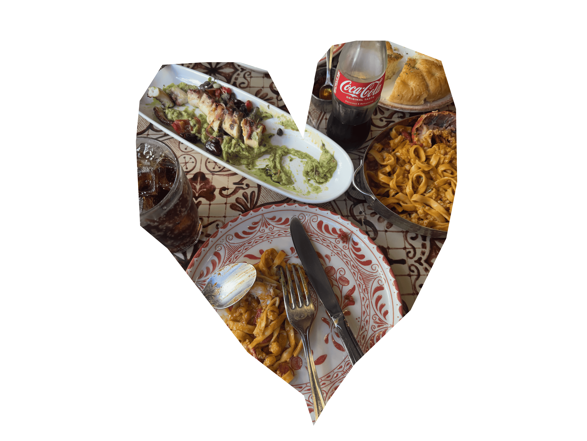
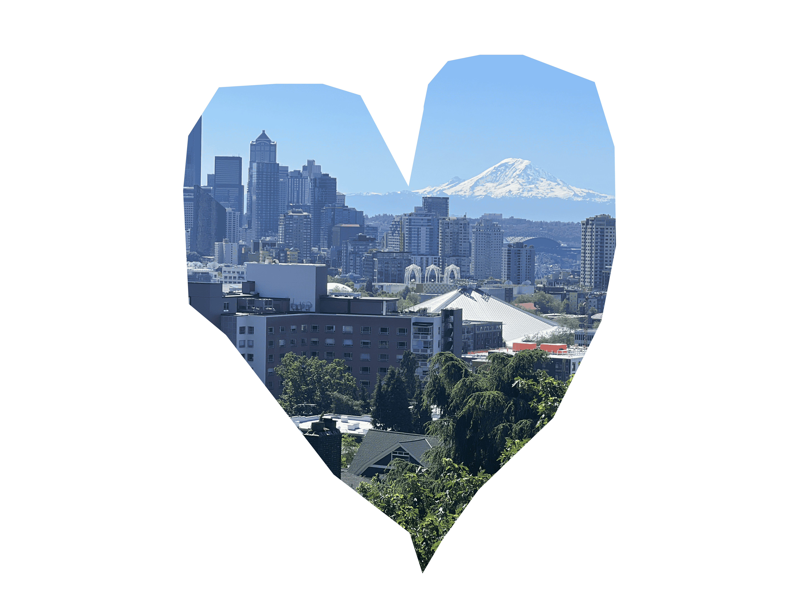
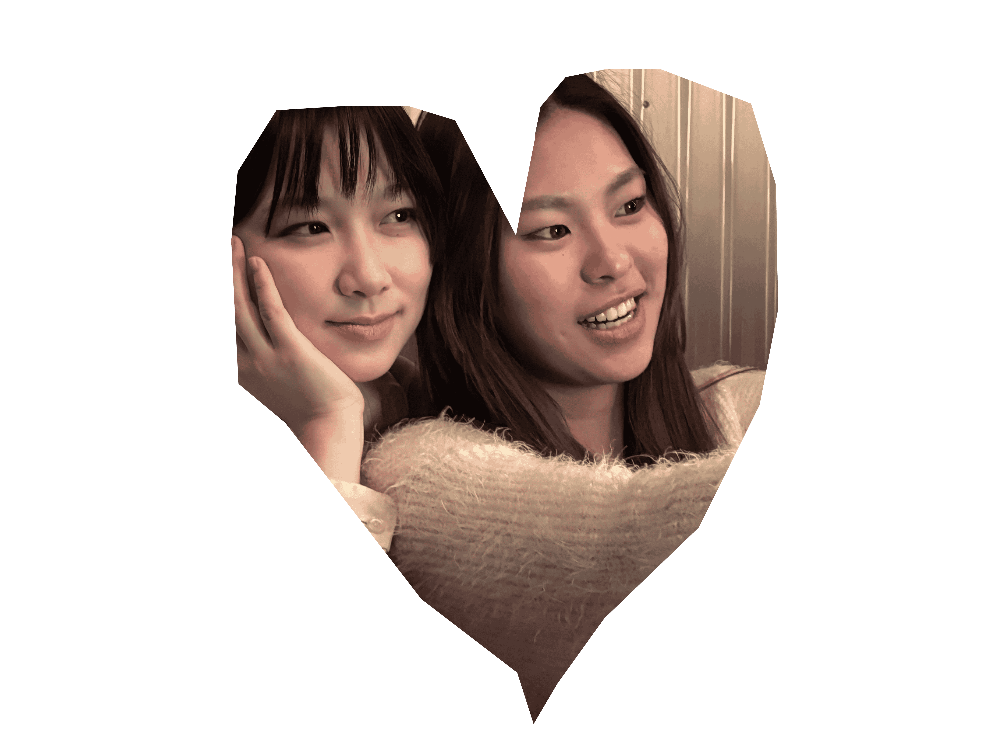
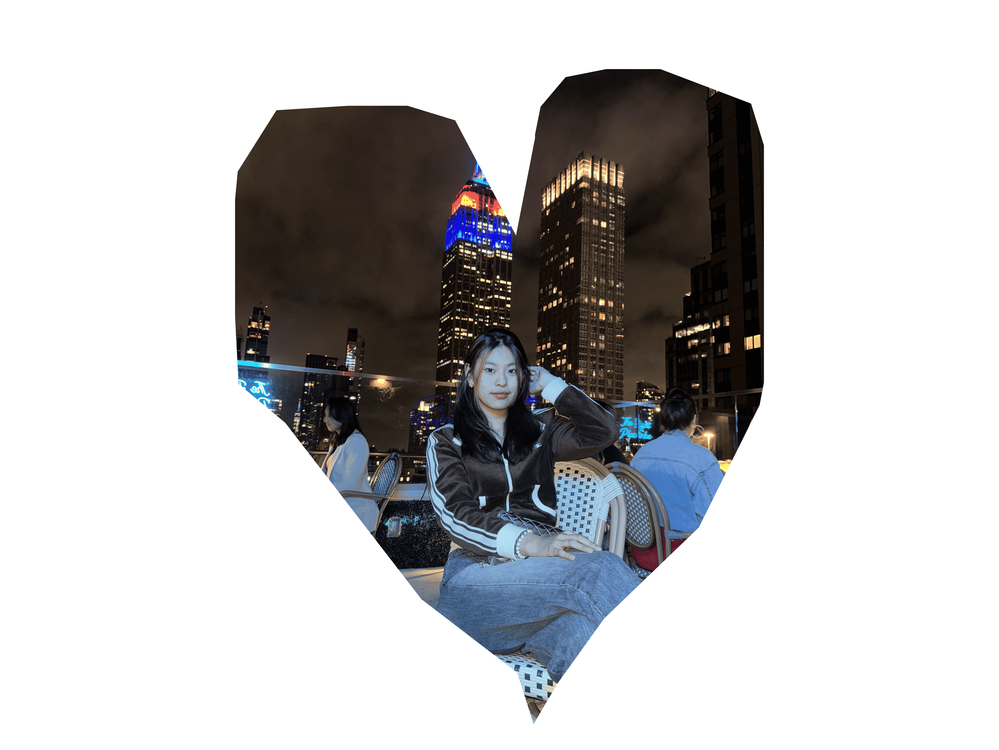

Here are examples...
❤I love the quiet rhythm of capturing little pieces of my world... I first of all I Love getting flowers!
❤I love when I take a photo of the good meal, and the calm feeling of simply existing in a peaceful place.
❤I love to look out those landscapes, a gentle joys that remind me how beautiful everyday life can be.
Picture was taken in Seattle, by me.
❤I like talking with my friends until laughter fills the air.
❤I love the way sunlight glows through a lens when I take a photo, and the calm feeling of simply existing in a peaceful place.
❤I love to take cute pictures as well, of course for instagram!
